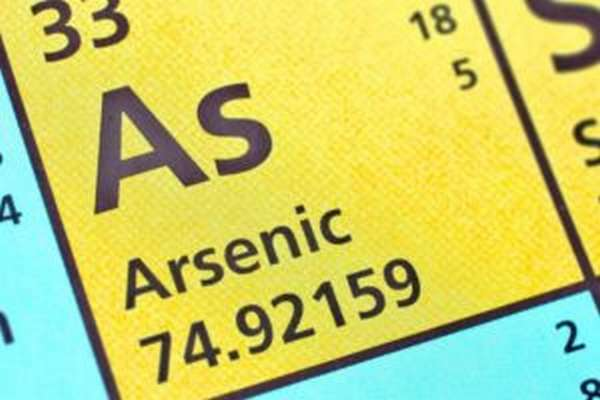
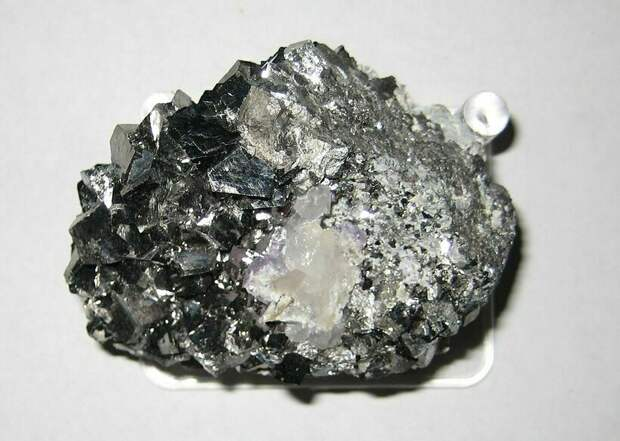

Мышьяк
Мышья́к (химический символ — As, от лат. Arsenicum) — химический элемент 15-й группы (по устаревшей классификации — главной подгруппы пятой группы, VA), четвёртого периода периодической системы химических элементов Д. И. Менделеева, с атомным номером 33.Простое вещество мышья́к — это хрупкий полуметалл стального цвета с зеленоватым оттенком (в серой аллотропной модификации). Ядовит и является канцерогеном.
Природные соединения мышьяка – жёлтый аурипигмент и тёмно-красный реальгар – использовались в древних Китае, Египте, Греции для приготовления красок и лекарств; было известно также, что соединения мышьяка ядовиты. Сильное действие на организм соединений мышьяка отражено в латинском названии элемента, которое, возможно, происходит от греч. ἄρσην – сильный, мощный. По другой версии, название элементу дано от греч. ἀρσενιϰόν – жёлтый аурипигмент. Русское название происходит от слов «мышь» и «яд» – соединения мышьяка издавна использовали для уничтожения мелких грызунов. Алхимики, прокаливая на воздухе природные минералы мышьяка, получали т. н. белый мышьяк – ядовитый оксид состава As2O3 (в Средние века использовался для отравления неугодных лиц). В свободном виде мышьяк, возможно, впервые получен Альбертом Великим в середине 13 в.

Мышьяк принадлежит к числу редких рассеянных элементов; содержание в земной коре составляет 1,7·10–4 % (по массе). Известно более 180 минералов мышьяка. Среди них наибольшее значение имеют арсенопирит (мышьяковый колчедан) FeAsS, реальгар As4S4 и аурипигмент As2S3. Очень редко в природе встречается самородный мышьяк. Для промышленного получения важное значение имеет присутствие мышьяка в медных и полиметаллических рудах, при переработке которых получают основное количество мышьяка и его соединений; см. Мышьяковые руды.Для получения мышьяка используют сульфидные руды мышьяка или отходы переработки медных и полиметаллических руд. В обоих случаях проводят обжиг сульфидов, далее мышьяк извлекают в виде оксида As2O, который восстанавливают нагреванием с древесным углём до свободного мышьяка. Для получения высокочистого мышьяка, необходимого для изготовления полупроводниковых материалов, используют зонную плавку, дистилляцию в вакууме и др. Объём мирового производства мышьяка 32,3 тыс. т/год (2019).

Мышьяк используют как добавку к некоторым сплавам, при получении арсенида галлия и других полупроводниковых материалов. Соединения мышьяка входят в состав пестицидов, антисептиков для пропитки древесины, применяются в медицине.